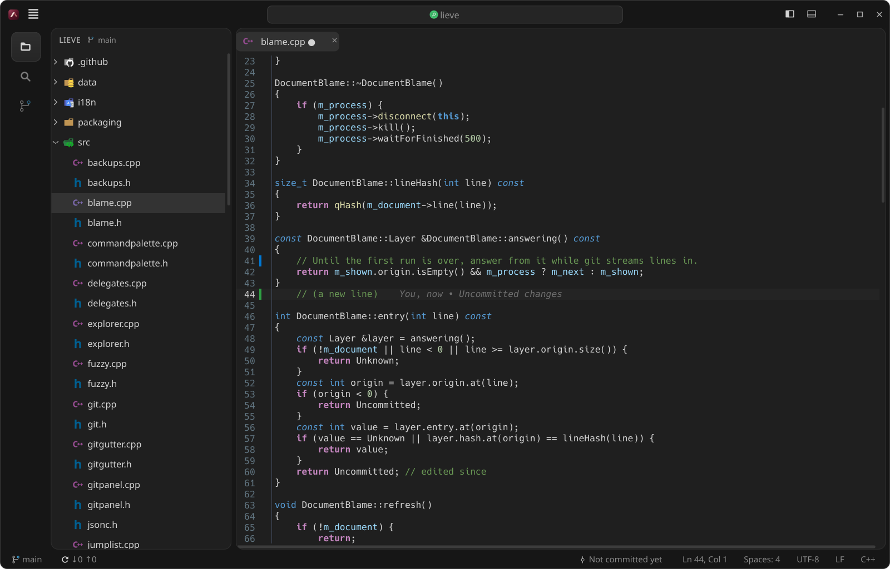

Lieve
- Latest release
- 0.1.6, 10 November 2026
- Platforms
- Linux (any desktop), Windows 10 and 11
- Built with
- C++, Qt 6, KDE Frameworks
- Interface
- English and Italian
- Licence
- GPL-3.0
A lightweight, native code editor, without Electron. It is at home on KDE Plasma and at ease on GNOME and the other desktops, with the look, the file icons and the main keyboard shortcuts of VS Code.
It does a few things and does them well. Lieve is Italian for light.

How light it is
Measured with the same medium-sized Angular project open in both editors:
| VS Code, with its extensions | Lieve | |
|---|---|---|
| Memory (PSS) | about 1,270 MB | about 110 MB |
| Processes and threads | 24 and 434 | 2 and 14 |
| Disk space | about 2.7 GB | about 1.4 MB, plus the KDE libraries that Plasma already ships |
It starts in about a quarter of a second, and each extra open project costs a few MB. A language server, when you install one, costs what it costs in VS Code too.
Features
Editing
- The editor of Kate (KTextEditor): highlighting for hundreds of languages, multiple cursors,
.editorconfig - Editors side by side, Markdown preview
- Unsaved files kept across restarts and crashes, as in VS Code
Finding your way
- Explorer, and search and replace in files with ripgrep, which honours
.gitignore - Quick Open (Ctrl+P) and the Command Palette (Ctrl+Shift+P)
- Several projects open at once, one window each, with a project picker on Ctrl+R
Git
- Git panel with change marks next to the line numbers and inline blame
- Branches, stashes, history and merge conflicts
Tools
- Terminal in the panel: Konsole when installed, otherwise Lieve’s own
- Prettier and ESLint on save, a Problems panel and npm scripts
- Go to definition, errors and completion from a language server, when one is installed
Install
Linux
Lieve needs KDE Frameworks 6 (the libraries, not Plasma) and ripgrep. On Arch and CachyOS with Plasma almost everything is already installed, and Debian 13, Ubuntu 25.04 and Fedora have all of it. This script downloads the latest release, builds it and installs it in ~/.local, without sudo, and tells you which packages are missing:
curl -fsSL https://raw.githubusercontent.com/giannoccarol/lieve/main/install.sh | bashOr build it yourself:
git clone https://github.com/giannoccarol/lieve.git
cd lieve
make -j$(nproc)
make installPKGBUILDs for Arch are in packaging/aur.
Windows
Download Lieve-v0.1.6-windows-x64.zip from the release, unzip it anywhere and run lieve.exe (Windows 10 or 11, 64-bit, ripgrep included). Install Git for Windows for the Git features, and Node.js for Prettier, ESLint and the language servers.
Updates
Lieve checks GitHub for new versions by itself and offers the update in the status bar: one click to install it, one to restart.
Credits
Lieve puts together components written by others: the credit for the heavy lifting is theirs. The full list, with licences, is in the README.
- KDE Community: KTextEditor and KSyntaxHighlighting (editor, highlighting and the VSCodium Dark theme), Konsole, KParts and the other KDE Frameworks.
- The Qt Company and contributors: Qt 6, and the terminal view of Qt Creator used for Lieve’s own terminal.
- Paul Evans: libvterm; Vitaly Petrov: Pty-Qt; Microsoft: the ConPTY code of Windows Terminal.
- Andrew Gallant (BurntSushi): ripgrep; Martin Mitáš: MD4C, behind the Markdown preview.
- vscode-icons team and Philipp Kief (Material Icon Theme): the file icons, read from the extensions installed in VS Code and not bundled.
- MSYS2: the packages behind the Windows build; Git, Prettier, ESLint, Node.js and the language servers Lieve uses when they are installed.
- Microsoft: Visual Studio Code, the model for the layout, the shortcuts and many features; Meld: the bands between the two sides of a diff.